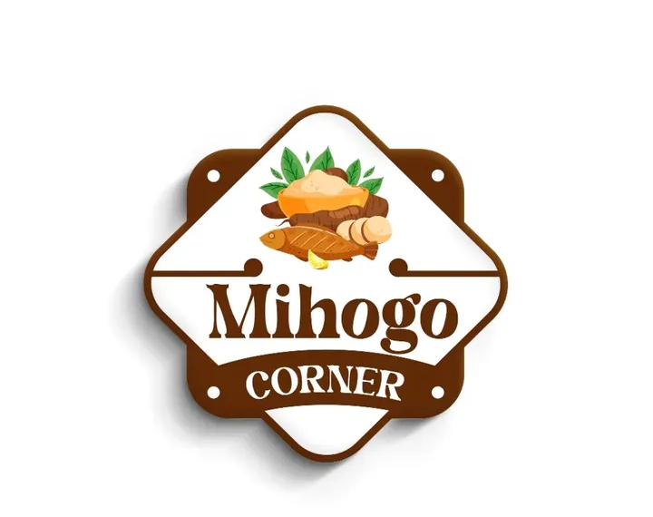

MIHOGO CORNER BOUTIQUE which is currently managed by bussines partner knows as
1. PATRICIA ANICETH MLINGI
2. NARGIS SHABAN MOHAMED
3. MBARAK MOHAMED OTMAR
4. HAIKA STANLEY MASAMU
(C.E.O) it's a small business enterprises which mainly deals with selling of QUALITY CASSAVA PRODUCTS. This business deals with selling quality food products without discriminating any kind of religions.MIHOGO CORNER BOUTIQUE contains QUALITY FOOD PRODUCTS of all ages and sizes. Every FOOD is available according to a particular age that a customer has and his preference.
The business was first introduced through online social media and later on was established at Chanika. The business now has managed to improve at a higher rate as it is now availble in some other places like SINZA,OYSTERBAY etc.
MIHOGO CORNER BOUTIQUE has managed to get people's attentiondue to better services provided by our intels to our dear customers. We provide better delivery services by making sure that our products has reached to the destination of the customer on time.